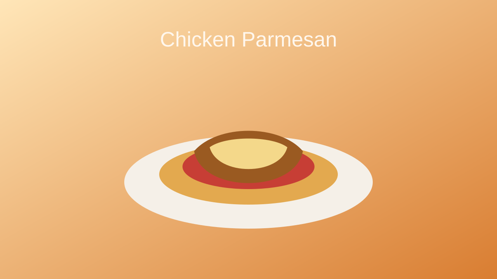

Home
Chicken Parmesan

Description
Chicken Parmesan pairs crispy breaded chicken with tomato sauce and melted cheese for a hearty Italian-American favorite. It is simple to assemble but feels special enough for a weekend dinner.
The contrast between the crunchy coating and the saucy topping makes this dish especially satisfying.
Ingredients
- Chicken breasts
- Breadcrumbs
- Eggs
- Flour
- Marinara sauce
- Mozzarella cheese
- Parmesan cheese
- Olive oil
- Italian seasoning
Steps
- Pound the chicken breasts to an even thickness.
- Dredge the chicken in flour, egg, and breadcrumbs seasoned with Italian herbs.
- Pan-fry the chicken until golden on both sides.
- Top with marinara sauce and mozzarella, then bake until the cheese melts.
- Finish with Parmesan and serve warm.